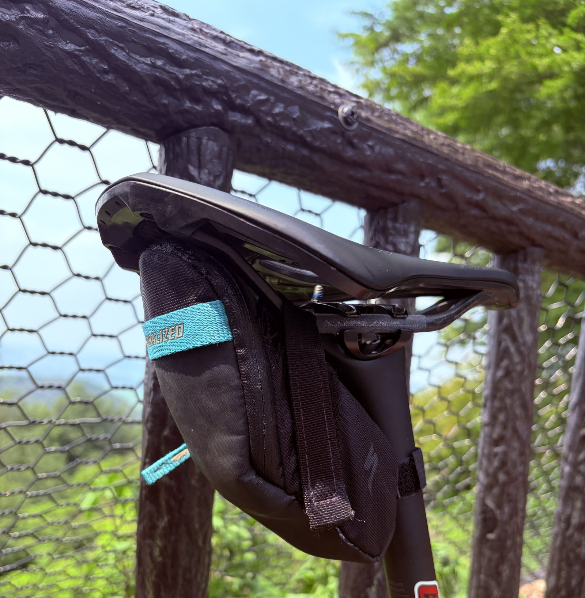
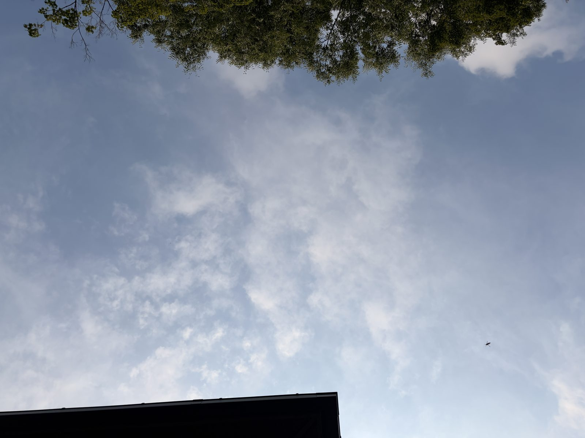

最高38℃の太平・琴平・唐沢。ボトル2本と水かけで夏ライドを耐えた日
前日は30℃を超えた部屋でSST20分×2を始め、1本目は完遂したものの2本目は10分で終了した。脚より先に呼吸が苦しくなったので、今日は風を受けられる外へ出ることにした。
予定では太平を登ったあと、帰りの平坦で一定出力を維持するつもりだった。しかし平均気温33.4℃、最高38℃。平坦を黙々と踏む気持ちは暑さに持っていかれたので、琴平と唐沢をいつもと逆側から上るプランに変更した。

ボトル2本を使えるようにした
夏に向けてツールケースを外し、予備チューブ、タイヤレバー、スルーアクスルも外せる携帯工具をサドルバッグへ移した。電動ポンプはスマートフォンと一緒にジャージのポケットへ。これでボトルケージを2つとも水分に使える。
今日は1本をBCAA入り、もう1本を飲む水と背中へかける水にした。装備を軽くしたというより、水を置く場所を増やすための配置換えである。最高38℃ならこちらの方が役に立つ。

太平は7分28秒、平均302W
太平は7分28秒で平均302W、NP305W。平均心拍156bpm、最大168bpmだった。暑いので最初から抑えたつもりはないが、数字だけ見ればきちんと高強度になっている。
75kg基準なら平均4.03W/kg。ここを登った時点で、帰りの平坦を長く踏み続ける案はだいぶ魅力を失っていた。脚より先に、暑い場所へ居続けることが嫌になってくる。

帰りの平坦をやめて逆琴平へ
予定していた帰りのストレート走はやめた。ただし軽く帰ったわけではない。平坦を一定出力で走る代わりに、逆琴平へ入り15分35秒、平均269W、NP271Wで登った。
予定を守ることより、その日の条件で意味のある負荷を作る方を優先した。暑さで判断が鈍った可能性も少しあるが、結果として15分以上は途切れず踏めている。
逆唐沢と最後の1分走
逆琴平のあとには逆唐沢へ。7分12秒で平均264W、NP266Wだった。平均心拍145bpmに対して平均ケイデンスは77rpm。暑さと、それまでの負荷が少しずつ数字へ出ている。
下ったあとは1分11秒を平均386W、最大602W。もう今日は十分だと思いながら、最後に短く踏んで終わった。全体のTSSは151.3。ルート変更は撤退ではなく、負荷の置き場所を変えただけだった。
水かけは「やらないよりまし」
背中へ水をかけると少し楽になった。ただし劇的に涼しくなるわけではなく、やらないよりはましという程度。期待しすぎると肩透かしだが、今日のような暑さではその少しがありがたい。
推定発汗量は約1.8L。ボトル2本を使えるようにした判断は正解だったと思う。前日は室内で呼吸が先に苦しくなったが、今日は走行風と水かけ、そしてルート変更で2時間を走れた。
今回やってみて思ったこと
予定を変えた日でも、負荷まで消えるわけではない。平坦走はできなかったが、太平302W、逆琴平269W、逆唐沢264Wと登りで必要な時間を踏めた。富士ヒルへ向けた実走としては十分に濃い。
一方で最高38℃の日にTSS151を積んだので、達成感だけで次へ進むのは危ない。今日は耐えられた日であって、暑さに勝った日ではない。帰ったあとは水分と食事を入れて、きちんと回復させる。
自分用メモ
- 全体51.76km / 2時間 / 769mアップ / 平均174W / NP239W / IF0.868 / TSS151.3
- W/kg75kg基準で平均2.32W/kg、NP3.19W/kg
- 主要区間太平7分28秒302W / 逆琴平15分35秒269W / 逆唐沢7分12秒264W
- 短時間名もなき峠2分11秒328W / 下皆川街道2分8秒361W / 最後1分11秒386W
- 心拍・回転平均132bpm / 最大168bpm / 平均ケイデンス82rpm
- 暑さ平均33.4℃ / 最高38℃ / 推定発汗量約1.8L